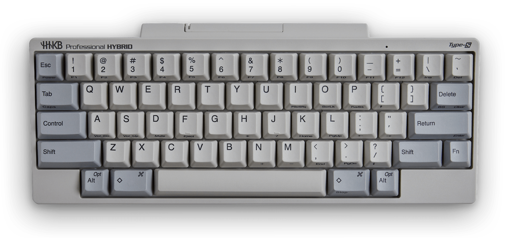

Gastón Ramos
Blog personal
Happy Hacking, mi teclado
Escrito en un ratito, una tarde de un 19 de Junio de 2024Hace un tiempo me compré un teclado, y la verdad estoy enamorado, bueno quizás es mucho decir eso, pero me encanta, fué una de las mejores compras que hice en el último tiempo junto a mi Akai MPC. Bueno el teclado que tengo es un Happy Hacking, en algún lado en algún momento leí que este teclado era muy bueno para usarlo con Emacs, la verdad no me acuerdo dónde, y que es un teclado diseñado para programadores. Una de las cosas que me más me gustó a penas lo ví en Amazon, es su estética retro (tengo la versión retro en color blanco), me hace acordar a cuando usaba mi PC 486 y me trae recuerdos muy lindos, lo segundo es que las teclas son silenciosas, y hace muy poco ruido, eso es importante para mí, dado que soy un poco sensible a los ruidos, Y para continuar tiene una cantidad de teclas reducida dejando únicamente las teclas más importantes, lo que lo convierte en un teclado minimalista, si algún lector me conoce un poco sabe que soy fan del minimalismo. Tiene la tecla "Control" a la izquierda de la tecla "A", lo que lo hace genial para sistemas Unix, y obviamente a los usarios de Emacs como yo.
En resúmen, todo esto lo hace un teclado muy productivo, por que hace que todas las teclas estén "cerca" y por este motivo escribimos a mayor velocidad.
¿No es hermoso?
Nos leemos,
Gastón Ramos
::: Si querés comentar algo mandame un email: ramos.gaston AT gmail.com :::